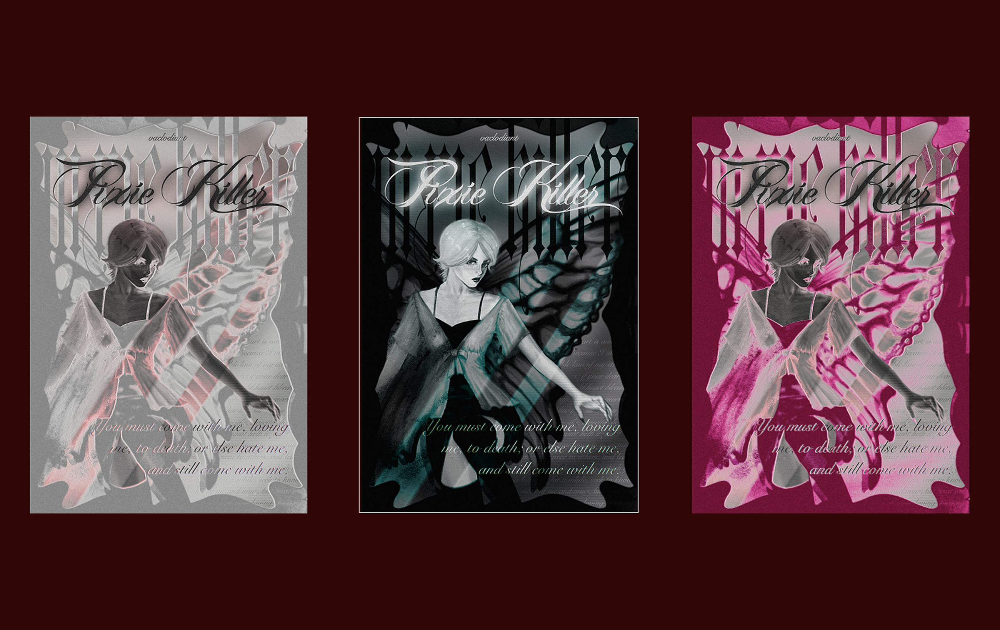

Независимый журнал, 2022
Pixie Killer
личная работа — иллюстрация оригинального персонажа в тёмной готичной эстетике. проект создавался как эксперимент: основной целью было освоение новой техники работы в Procreate — построение сложной формы, работа с глубоким тёмным светом, создание атмосферы через цвет и текстуру.
образ разрабатывался от первых набросков до финального результата, где каждый слой добавлял характер и настроение персонажу.


